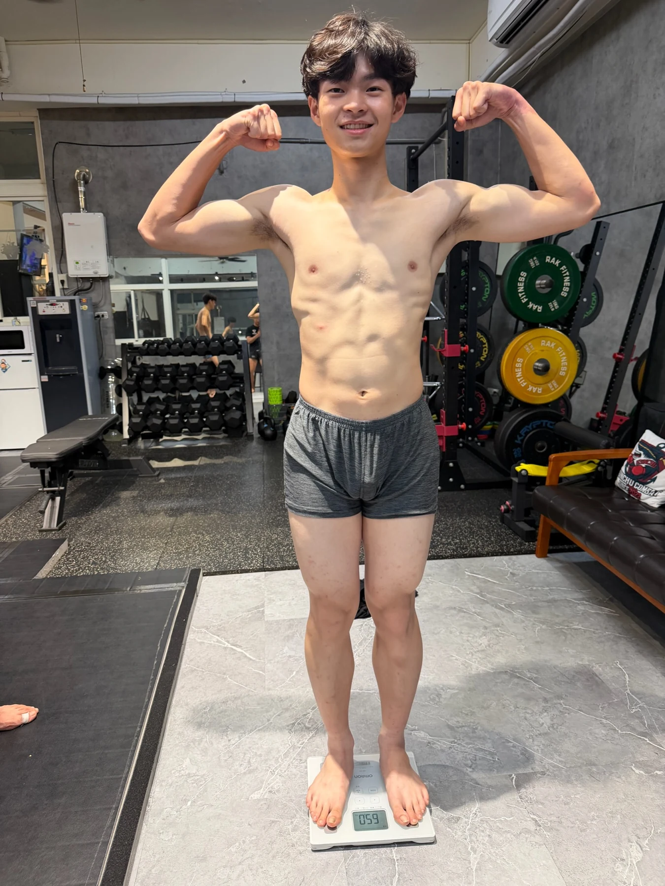
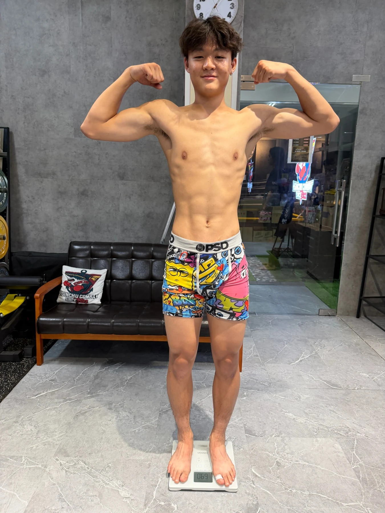
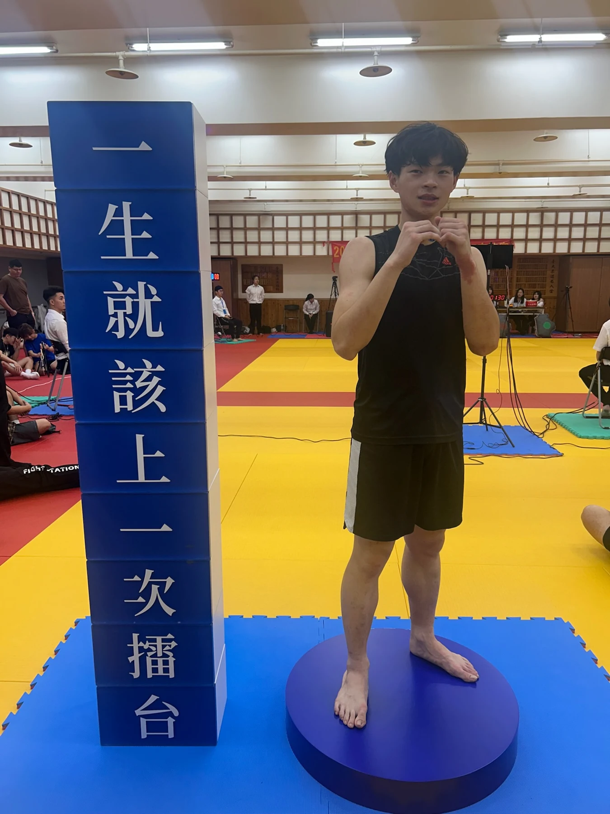
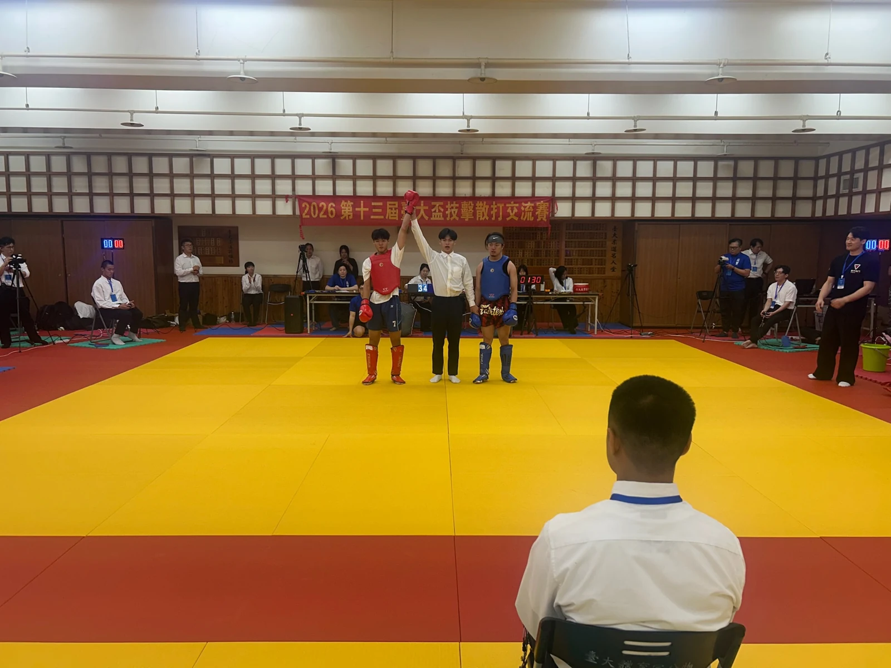
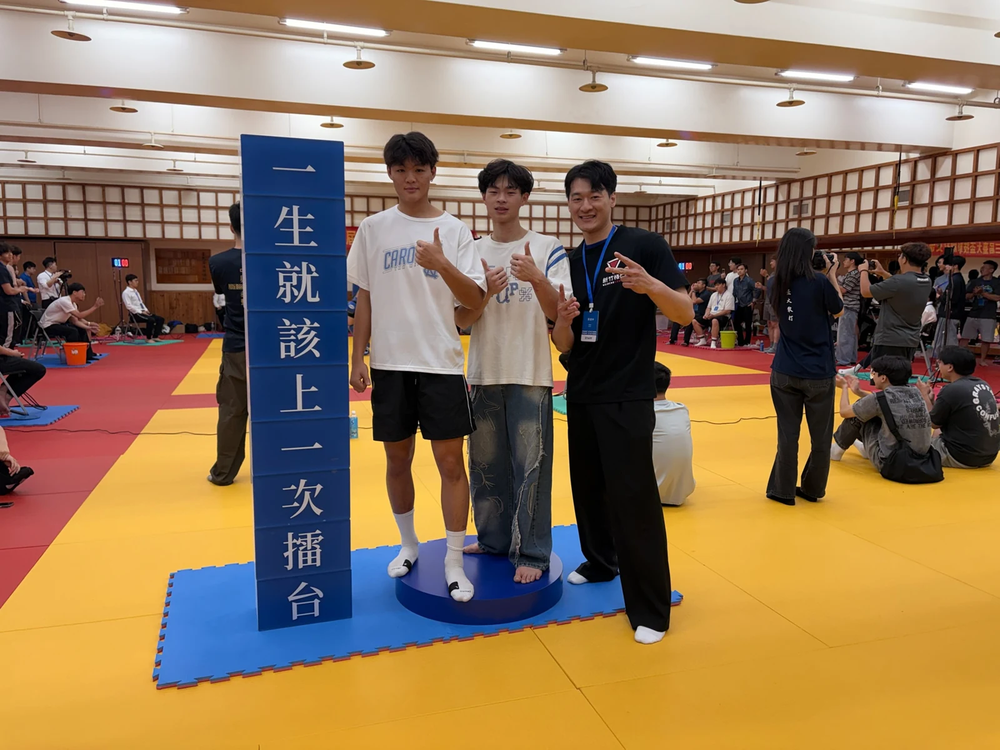
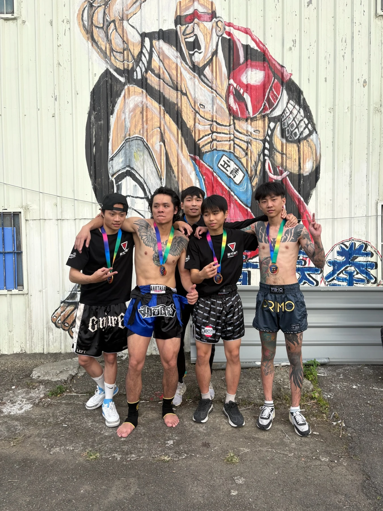
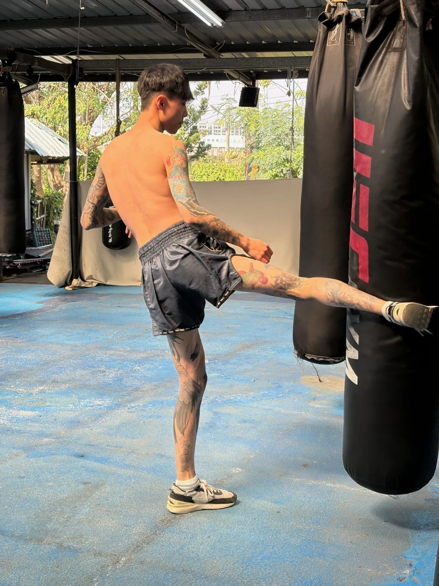
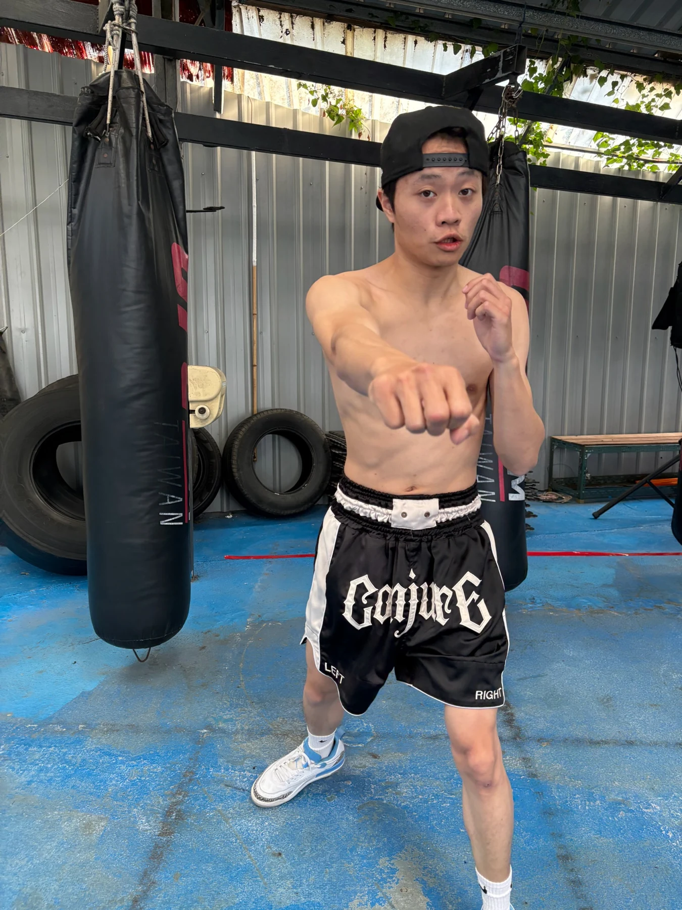
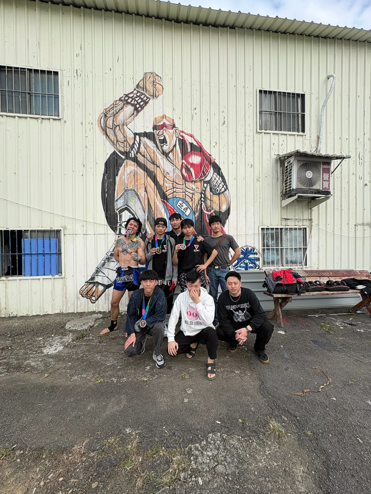
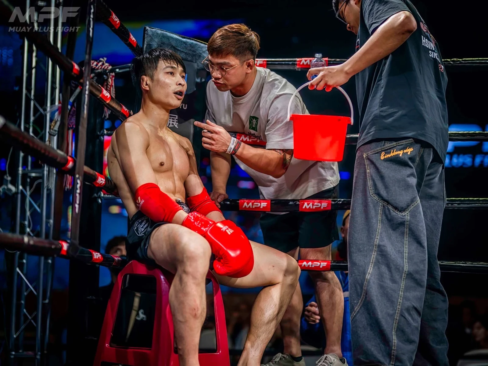

上場之前
每一步都算數
從館內日常到教練回饋 從賽前準備到正式上場
把努力的過程和陪伴一起留下來
把基本功練進日常
沙袋前的反覆練習與練習後的教練回饋
從每一次出拳開始
館內沙袋練習 記錄出拳回收與腳步的日常累積
練完 再聽教練說一次
訓練後坐下來聽教練講解 把練習中的問題帶回討論
把投入的過程留下來
同日個人紀錄 呈現投入訓練的日常

留下這一天的訓練紀錄
留下當天的個人狀態 作為訓練日誌的一部分

把認真投入的自己記下來
同一天留下的另一張個人紀錄 記住認真投入的時刻
做好每一次上場準備
面對面的提醒與夥伴之間的暖身練習
上場之前 先確認重點
教練面對面說明 串起館內練習與比賽當天的準備
和夥伴一起進入狀態
戴好護具後與夥伴練習出拳及反應 準備進入比賽
上場也有人陪你
從護具調整到場邊指導 教練陪你一起面對
場邊 教練就在身旁
教練在場邊協助選手調整護具 陪伴每一次上場準備
你在場上 教練在身旁
從場邊教練的視角 看見選手把練習帶上賽場
個人紀錄照片為同日拍攝 不代表訓練前後對照
選手備戰與比賽
從纏手綁與賽前暖身 到上場攻防與團隊合影 記錄選手一步一步完成的過程

選手個人參賽紀錄
比賽當天留下的個人影像 記錄上場前的專注
纏好手綁 再準備上場
從纏好手綁開始 把賽前每個準備環節做好
藍方護具選手的賽前打靶
跟著教練的靶位練習拳腿組合 準備進入比賽節奏
紅方護具選手的出場準備
在準備區練習出拳與踢擊 把注意力放回每個動作
上場前 把細節準備好
賽前確認護具與動作 在教練陪伴下準備上場
場上的攻防與移動
觀察雙方的步法與攻防 把練習帶進真實回合
完整選手備戰與比賽
92 秒實戰 步法與攻防
連續的比賽片段 看見移動距離與攻防之間的選擇
37 秒實戰 拳腿交鋒
拳腿交鋒之間 練習觀察對手並回應不同節奏

裁判舉手的賽後時刻
比賽結束後留下現場紀錄 每一次上場都是一次經驗

在場館留下三人合影
在比賽會場留下合影 記錄一起出發的夥伴
一起留下參賽回憶
選手與同行夥伴留下合照 一起記住這次出賽
立青泰拳參賽紀錄
把賽前打靶 教練提醒 擂台回合與賽後時刻一起留下來

立青賽後 和夥伴一起合影
比賽場館外的合照 留下團隊共同參賽的記憶

上場前 先找回踢擊節奏
透過沙袋踢擊暖身 找回動作與身體的節奏

把拳架與專注準備好
在暖身區準備拳架與出拳 把注意力帶回自己
教練帶打靶 進入比賽節奏
教練持靶帶著選手練習 在拳腿組合中確認節奏
上場前最後的提醒
上場前聽取教練提醒 把準備好的動作帶上擂台
再確認一次膝法與防守
教練再次示範膝法與防守 把動作重點確認清楚
完整立青泰拳參賽紀錄
上場前的暖身與準備
上場之前先暖身並熟悉動作 準備進入比賽的節奏
從賽前鼓勵 到擂台攻防
從賽前互動到擂台攻防 記錄選手上場的不同時刻
立青精華 A 從上場到賽後
把賽前準備與比賽現場 串成一段參賽紀錄
立青精華 B 暖身到近距離攻防
從不同角度回看擂台上的動作與攻防
立青精華 C 擂台上的回合
記錄現場回合與上場時刻 留下每次參賽的足跡
3 分鐘擂台實戰紀錄
保留較連續的擂台實戰 看見回合中的移動與應對
回合結束後的擂台時刻
回合結束後的現場時刻 選手與裁判一起留在擂台上

每次出賽 都有團隊同行
比賽之後一起合照 記住場內場外的同行夥伴
擂台現場
從攻防到回合之間的場邊協助 看見比賽完整的不同面向
把每一次練習 帶上擂台
把館內練習的拳腿與防護 帶到真正的擂台回合

回合之間 也有人陪你調整
回合之間回到場邊 聽取提醒並調整接下來的節奏
MPF 現場比賽紀錄
從觀眾席視角看見現場回合 保留比賽攻防與場館氣氛
留住上場之後的那一刻
比賽回合結束後 留下選手與裁判同框的現場紀錄